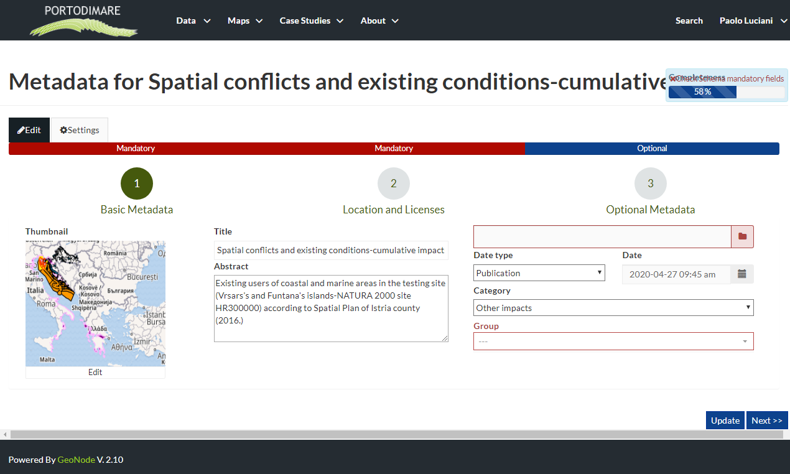
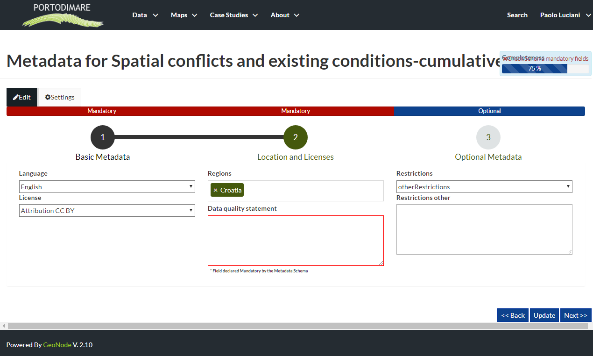
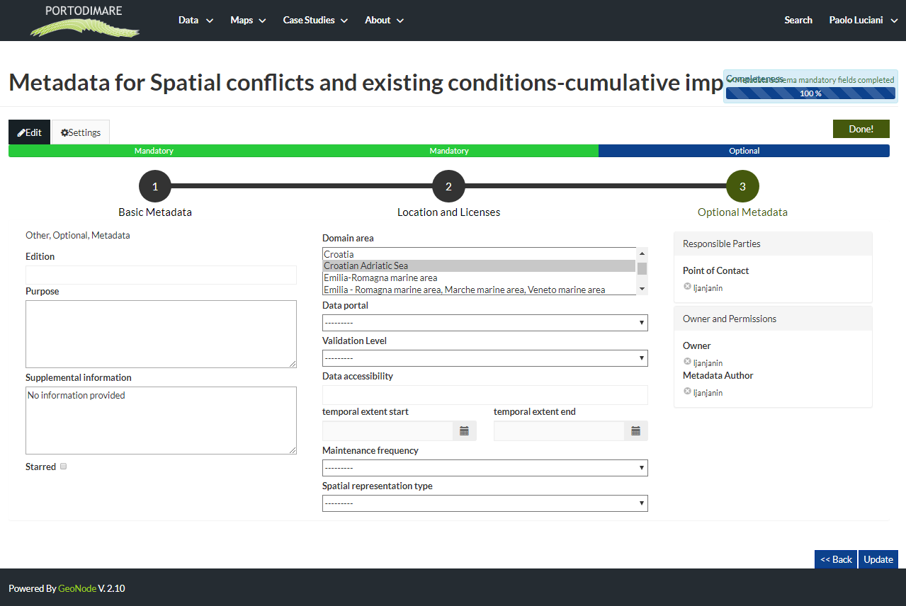

Maps Metadata¶
Maps Metadata can be explored by clicking the Metadata Detail button from the Map Information page.
The Map Metadata Detail button
The Map Metadata Detail page will open.
The Map Metadata Details
Lots of information are displayed in this page. Those information are grouped as follow:
- Identification to uniquely identify the map (Title, License, Publication Date and Regions. There are also some flags which tell you the state of the map, in particular if it is Approved and/or Published);
- the map Owner;
- Information, the Identification Image, the Spatial Extent, the Projection System and the Extent;
- Features, Language, Supplemental and other Information;
- Contact Points, the available user to get in contact;
- References, links to the map and its metadata;
- Metadata Author, information about the author of the metadata;
- Other Information.
Edit Metadata¶
Maps Metadata can be edited by clicking the Edit Map button from the Map Information page, will be open a pop-up where can be choose two edit method (Wizard or Advanced Edit) described below.
The Map Metadata Edit pop-up
Metadata Wizard¶
Basic Metadata
Basic Map Metadata
In the first step the system asks you to insert the following metadata (required fields are highlighted with red outlines):
- The Thumbnail of the map (click Edit to change it);
- The Title of the map, which should be clear and understandable;
- An Abstract;
- The Creation/Publication/Revision Dates which define the time period that is covered by the map;
- The Keywords, which should be chosen within the available list;
- The Category which the map belongs to;
- The Group which the map is linked to.
Click Next >> to go to the next step.
Location and Licenses
Location and Licenses Metadata for Maps
The following list shows what kinds of metadata you are required to enter (see also the picture below):
- The Language of the layer;
- The License of the dataset;
- The Regions covered by the layers extent. Proposed extents cover the following scales: global, continental, regional, national;
- The Data Quality statement (general explanation of the data producer’s knowledge about the lineage of a dataset);
- Potential Restrictions on layer sharing.
No further mandatory metadata are required in the next step so, once the required fields have been filled out, a green Done button will be visible in the screen. Click Next >> to go to the next step or << Back to go back to the previous step.
Optional Metadata
Optional Map Metadata
Complementary information are:
- The Edition of the map;
- The Purpose of the map and its objectives;
- Any Supplemental information that can provide a better understanding of the map;
- The Maintenance frequency of the map;
- The Spatial representation type, the method used to represent geographic information in the dataset;
- The users who are Responsible for the layer, its Owner, and the Author of its metadata;
If you miss some mandatory metadata the Completeness bar shows you a red message like the one in the picture below.

Completeness Progress Bar
Metadata Advanced Editing¶
The Advanced Edit editing tool allows to change the map metadata. You can find this button into the map metadata edit pop-up.
The Map Metadata Edit pop-up
Click on it to display the Metadata Advanced Editing Page. That page allows you to edit all the layer metadata described in the previous paragraph. Once you have finished to edit them click on Update to save your changes.
The Advanced Edit Page